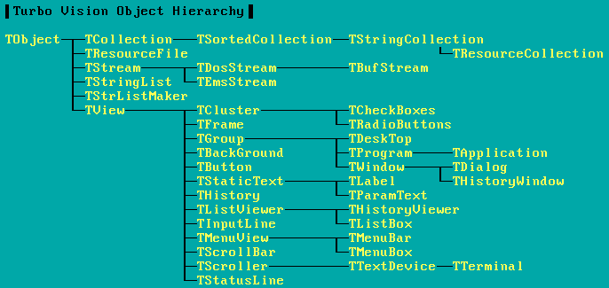
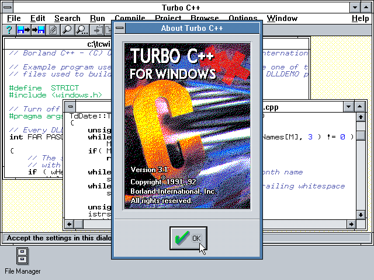
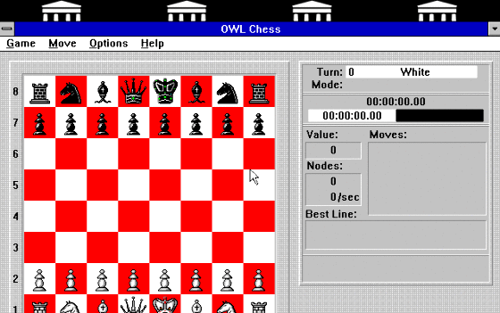
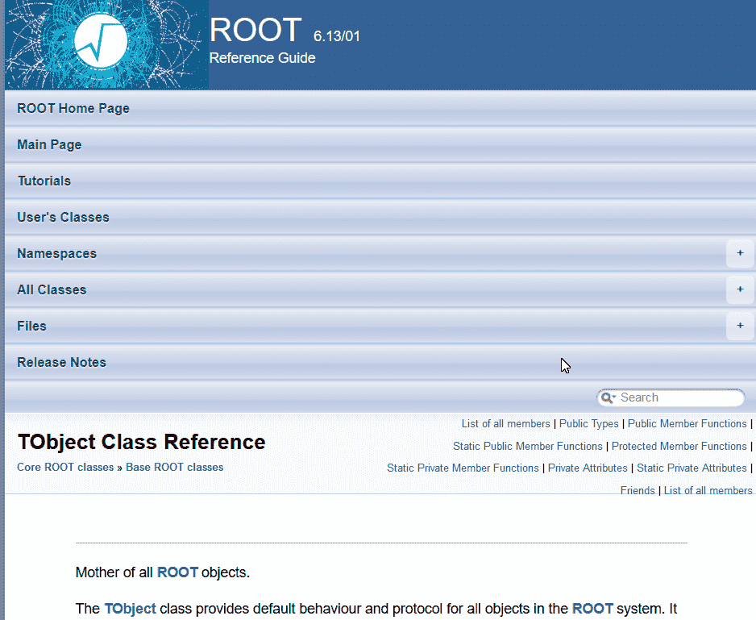
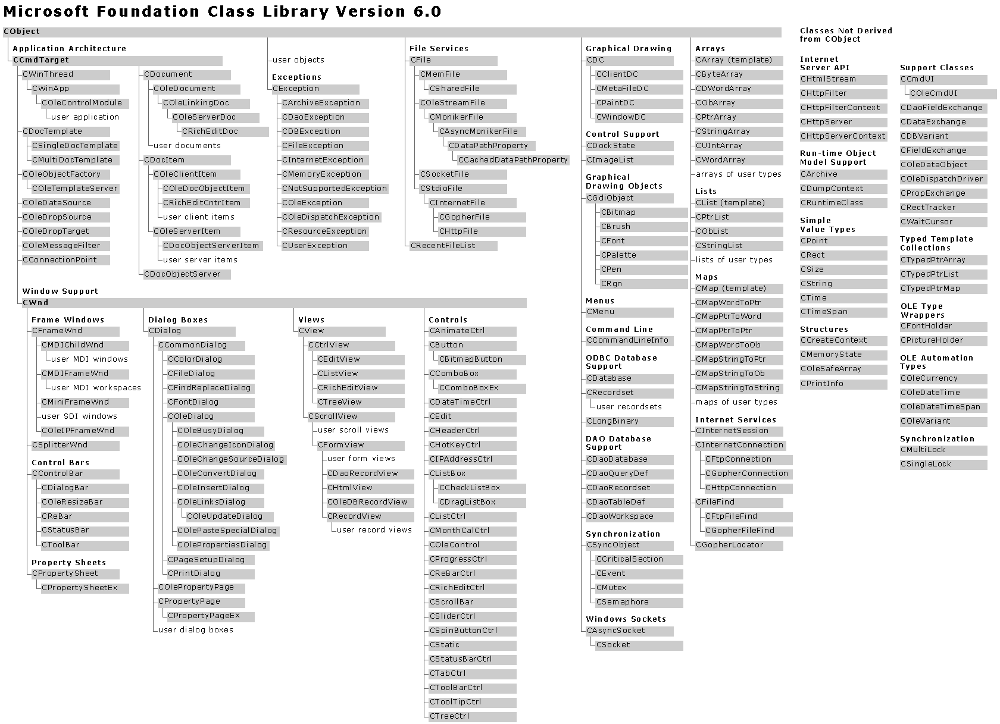
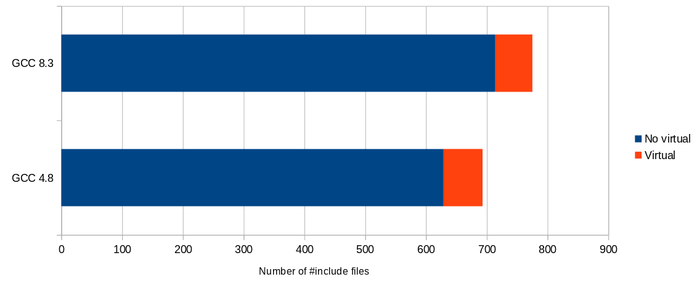

Laboratorio di TNDS – Lezione 11
Maurizio Tomasi
Martedì 2 dicembre 2025
Conclusioni sul corso di TNDS
Come usare quanto imparato qui?
In questo corso abbiamo insegnato il linguaggio C++ e i
fondamenti della OOP.
È una preoccupazione mia e degli altri docenti del corso che non
vi fermiate a questo! (Carminati vi ha già mostrato Python, io vi ho
mostrato Julia…)
Nella maggior parte delle situazioni in cui può imbattersi un
fisico, esistono alternative più semplici ed
efficienti del C++ e della programmazione OOP.
Turbo Vision
Un programma Turbo Vision poteva salvare su disco il suo
stato.
Quando si usciva dal programma e lo si faceva ripartire, l’utente
ritrovava tutto nello stesso stato.
Ogni classe che definiva gli oggetti del programma (finestre di
testo, bottoni, dialoghi…) derivava dalla classe TObject
(dalla versione 2.0, TStreamable), che aveva un metodo
save e un metodo load.
Gestione dello stato
Ecco una versione molto semplificata della funzione di
salvataggio:
TObject **objects = …; // Array of pointers to TObject
for(int i = 0; i < num_of_objects; ++i) {
objects[i]->save();
}
Ovviamente TObject::save è un metodo virtuale puro,
che viene ridefinito in tutti gli oggetti discendenti: è il
polimorfismo!
Gerarchia di Turbo Vision

In Turbo Vision 1.0, quasi tutte le classi sono derivate dalla classe
TObject!
Borland C++ per Windows

La versione per Windows del Borland C++ (1992) includeva
OWL (Object Windows Library) per scrivere programmi
Windows.
Object Windows Library

Programma di esempio di Borland C++, scritto usando OWL. (Il gioco
funziona veramente!) Ce n’era pure una versione per DOS in modalità
caratteri scritta usando Turbo Vision.
ROOT

Anche ROOT (che nasce nel 1994) usa l’approccio di fondare tutta la
gerarchia di classi su un solo tipo, TObject.
Microsoft Foundation Classes

Quasi tutte le classi derivano da CObject (1998).
Incapsulamento
La promessa dell’OOP era quella di rendere il codice più
riutilizzabile:
- Usando l’incapsulamento, tutto è interno a una classe
- Posso quindi prendere la classe e usarla in un nuovo progetto
Incapsulamento
Se però volessi riutilizzare TRadioButtons di Turbo
Vision in un mio programma, non potrei limitarmi a prendere solo quella
classe:
TRadioButtons deriva da TCluster…- …che deriva da
TGroup…
- …che deriva da
TView…
- …che deriva da
TObject.
TView usa le classi TPoint,
TRect, TScreen, e
TApplication.
Se voglio usare un algoritmo di TRadioButtons nel mio
programma, devo incorporare tutto: la promessa di riutilizzabilità non
si concretizza quasi mai!
Gerarchie di classi
Nei progetti che usano OOP, c’è una enorme proliferazione di classi,
legate tra loro da relazioni spesso complesse. Questo rende il codice
difficile da comprendere.
Gerarchie di classi
- Considerate le Microsoft Foundation Classes (slide precedente): è
difficile comprenderne la struttura intricata!
- Eppure la slide presenta solo le relazioni
tra i tipi di dati…
- …e nulla ancora dice sugli algoritmi (es.,
come disegnare a video una finestra, cosa succede quando si preme un
bottone…).
- Con la OOP, l’implementazione degli algoritmi va affrontata solo
dopo che si è definita la gerarchia di classi!
Alexander Stepanov
- Alexander Stepanov, uno dei creatori della libreria C++ STL
(Standard Template Library, quella che definisce
std::vector, std::sort, etc.) è da sempre
stato un oppositore della programmazione OOP.
- Per il C++ propose un meccanismo alternativo, chiamato
programmazione generica (v. An Interview
with A. Stepanov).
- La sua idea è che i programmatori debbano concentrarsi innanzitutto
sugli algoritmi, e che solo quando questi sono
definiti si debba pensare ai tipi di dati su cui applicarli.
- Al contrario, l’OOP obbliga a partire dal tipo di dato (ossia, la
gerarchia di classi) per definire poi gli algoritmi.
OOP e C++
- Bjarne Stroustrup, il creatore del C++, sposò le idee di
Stepanov
- Lo standard C++98 include per la prima volta una versione della
STL.
- La STL fornisce gli header
<string>,
<vector>, etc.
- Pochissimi di questi file usano l’ereditarietà e il
polimorfismo.
Dove va oggi il C++
- La tendenza del linguaggio C++ negli standard succedutisi negli anni
è stata di potenziare la programmazione generica e la
metaprogrammazione.
- Poche delle potenzialità delle versioni più recenti (dal C++11 in
poi) sono legate alla OOP.
- Due eccezioni che avete imparato ad usare sono le keyword
final e override, che regolano il
polimorfismo.
Piccolo esperimento
A dimostrazione di ciò, contiamo i file della libreria standard
C++ sui computer del laboratorio che implementano metodi
virtual (segno di polimorfismo):
$ grep -l virtual $(find /usr/include/c++/4.8.5/* -type f) \
| wc -l
64
$ grep -L virtual $(find /usr/include/c++/4.8.5/* -type f) \
| wc -l
629
(Usando -l si contano i file che includono
virtual, usando -L quelli che
non lo includono).
Dove va il GCC
- GCC 4.8: 64 / 629 file contengono
virtual
- GCC 8.3: 61 / 714 file contengono
virtual

Calcolo scientifico
Se la fisica computazionale vi interessa, vi consiglio caldamente di
impratichirvi con uno o più di questi strumenti:
- Python: molto semplice, sono
disponibili tantissime librerie (matematica, astronomia, web,
multimedia, programmazione giochi, etc.)
- Julia: meno librerie di Python,
ma molto più veloce e potente.
- GNU R: per analisi
statistiche complesse non ha rivali.
- Mathematica, a
pagamento: molto potente nel calcolo simbolico.
- Matlab,
a pagamento, è orientato ad applicazioni ingegneristiche.
- Fortran: come il
C++, ma più adatto al calcolo scientifico (e più semplice da
usare).
Tranne Fortran, tutti questi linguaggi sono interattivi.
Seminario opzionale
- Negli scorsi anni ho proposto un seminario di approfondimento su
C++, Assembler, Python e Julia.
- Nel seminario spiego le differenze tra di loro e do indicazioni su
come scegliere lo strumento di lavoro migliore.
- È stato un seminario che ha sempre riscosso abbastanza
successo.
- Se alcuni di voi sono interessati, posso riproporlo, ma suggerirei
di farlo dopo la sessione di esami.